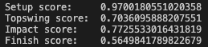

Devices that help golfers perfect their form are often expensive and inaccessible. My project attempts to bring golf swing analysis to your hand at no cost, swing coach takes in images of a users swing at 4 key positions; setup, topswing, impact and finish then compares it with professional golfer Adam Scott's swing and returns a similarity score for each of the 4 key positions; setup, topswing, impact and finish.
I used CMU's openPose API for body part detection in images, the weights are from the pre-trained Caffe model, the file "pose_iter_1600000.caffemodel" in my repository. Many applications of openPose use mobileNet, however I chose to use the Caffe model because it is a deep learning framework that supports multiple neural network architectures, this led me to notice better results using the Caffe model although it requires a longer runtime. Comparing the size of each pre-trained model for each framework, mobileNet is a few megabytes while, caffee is a few hundred megabytes. When an image is passed through the model, it outputs a 4D matrix which includes a confidence map of each body part. Taking the global maximums of each body part's heat map allows me to identify the location of the body parts I want.
Afterwards we use the law of cosines to help us determine each angle in
a golfers pose, for example if we are trying to find the angle on the right elbow,
we need the distances from a = right shoulder to right elbow, b = right elbow to right wrist and
c = right wrist to right shoulder.
c² = a² + b² - 2ab cos(C_ang) we solve for C_ang to get the angle at the
right elbow.
Once all the angles are calculated, I use the cosine similarity formula to calculate
a similarity score, let v1 be the set of angles in image1 and let v2 be the set of angles
in image2. The cosine similarity is computed with dot(v1, v2)/(norm(v1)*norm(v2))
A score close to 0 indicates no similarity between the poses and a score close to 1 indicates the two poses are similar.
Sometimes openPose does not detect all body parts or body parts are omitted because the confidence score
is too low, I make sure that if an angle is missing from either the amateur or pro swing then the corresponding
angle from its counterpart is also removed from the list and not included in the cosine similarities calculation.
The images on the top is the swing of an amatuer golfer and the images on the bottom is the swing of a professional golfer. The first set of images is the setup position, the second set of images is the topswing position, the third set of images is the impact position and the fourth set of images is the position. Based on our algorithm, our amatuer golfer has the most similar pose to the professional players setup position and least similar pose to the professional playeers finishing position
opencv: https://pypi.org/project/opencv-python/
math: https://pypi.org/project/python-math/
numpy: https://numpy.org/install/
openPose example: https://github.com/opencv/opencv/blob/master/samples/dnn/openpose.py
law of cosines example: https://github.com/lxaw/PoseAngleEstimation/blob/main/pose_estimator.py
website template: https://github.com/learning-zone/website-templates/tree/master/stylish-portfolio